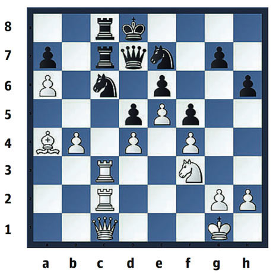
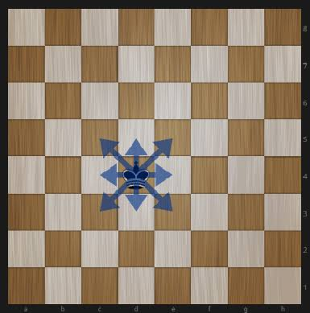
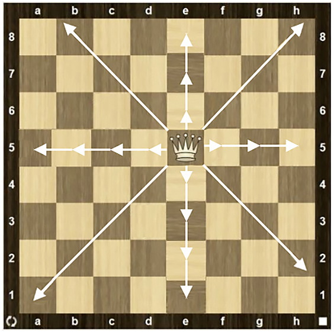
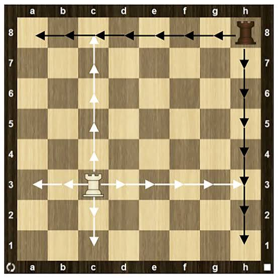
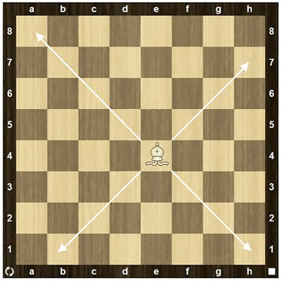
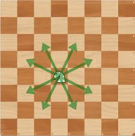
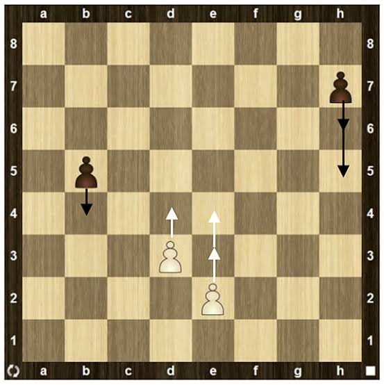

Кожен із шести видів фігур має власні правила пересування. Фігури не можуть проходити
крізь інші фігури, за винятком коня, який здатний перестрибувати через них. Також фігура
не може переміститися на клітинку, яку займає інша фігура того самого кольору. Натомість
вона може зайняти клітинку суперника, унаслідок чого фігура суперника знімається з дошки.
Зазвичай фігури переміщують таким чином, щоб отримати можливість захопити фігури суперника,
захистити власні фігури від захоплення або встановити контроль над важливими клітинками дошки.

Король — найважливіша фігура на шахівниці, хоча за можливостями пересування він є однією з найслабших.
Він може переміщуватися лише на одну клітинку в будь-якому напрямку: вертикально, горизонтально або по
діагоналі. Король не має права переходити на клітинку, яка перебуває під атакою фігури суперника, оскільки
це поставило б його під загрозу захоплення. Така ситуація, коли король перебуває під атакою, називається шахом.

Ферзь — найпотужніша фігура на шахівниці. Він може переміщуватися по прямій у будь-якому напрямку:
вперед, назад, убік або по діагоналі. Ферзь здатний пройти будь-яку кількість клітинок, якщо на його
шляху немає власної фігури. Як і для інших фігур, у разі взяття фігури суперника хід ферзя одразу
завершується. Наприклад, білий ферзь може захопити чорного ферзя, після чого чорний король змушений
зробити хід.

Тура може переміщуватися на будь-яку кількість клітинок, але лише вертикально або горизонтально
— вперед, назад чи вбік. Особливо ефективними тури стають тоді, коли вони взаємодіють між собою та
захищають одна одну.

Слон може переміщуватися на будь-яку кількість клітинок, але виключно по діагоналі.
Кожен слон розпочинає партію на клітинці певного кольору — світлого або темного — і протягом
усієї гри залишається на клітинках саме цього кольору. Два слони добре доповнюють один одного,
адже кожен із них може контролювати ті ділянки дошки, які недоступні іншому.

Кінь пересувається за особливим правилом, яке відрізняється від ходів інших шахових фігур.
Він переміщується на дві клітинки в одному напрямку, а потім ще на одну клітинку перпендикулярно
до нього, утворюючи траєкторію у формі літери «Г». Кінь є єдиною фігурою, яка здатна перестрибувати
через інші фігури під час свого ходу.

Пішак відрізняється від інших фігур тим, що його спосіб пересування та взяття фігур суперника не однаковий.
Він рухається прямо вперед, але захоплює фігури по діагоналі.
Зазвичай пішак може переміститися лише на одну клітинку вперед. Однак під час свого першого ходу він має
можливість пройти одразу дві клітинки. Захоплювати фігури пішак може тільки на одну клітинку по діагоналі
перед собою. Рухатися або здійснювати взяття назад пішак не може.
Якщо безпосередньо перед пішаком знаходиться інша фігура, він не може переміститися через неї або захопити
її.
